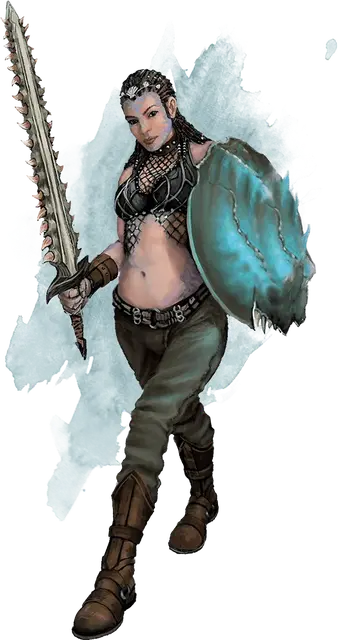

Разбойник Сокрушительной Волны
Crushing Wave Reaver
Средний Гуманоид (Человек), нейтрально-злой

Класс Доспеха 14 (щит)
Хиты 22 (4к8 + 4)
Скорость 30 футов
| мод | спас | ||
|---|---|---|---|
| СИЛ | 15 | +2 | +2 |
| ЛОВ | 14 | +2 | +2 |
| ТЕЛ | 13 | +1 | +1 |
| мод | спас | ||
|---|---|---|---|
| ИНТ | 10 | +0 | +0 |
| МДР | 11 | +0 | +0 |
| ХАР | 8 | −1 | −1 |
Навыки Атлетика +4, Скрытность +4
Чувства пассивное Восприятие 10
Языки Общий
Опасность 1/2 (100 опыта)
Бонус мастерства +2
Действия
Меч с акульими зубами. . Рукопашная атака оружием: +4 к попаданию, досягаемость 5 фт., одна цель. Попадание: рубящий урон 6 (1к8 + 2), или рубящий урон 7 (1к10 + 2), если используется двумя руками. Разбойник дополнительно бросает одну кость урона оружием, если попал этой атакой по цели, которая не носит доспехов.
Метательное копьё. . Рукопашная или дальнобойная атака оружием: +4 к попаданию, досягаемость 5 фт. или досягаемость 30/120 фт., одна цель. Попадание: колющий урон 5 (1к6 + 2).
Описание
Эти злобные морские налётчики составляют основную силу культа. Раньше многие из них были пиратами, и их жажда крови и богатой добычи нисколько не уменьшилась после того, как они вступили в культ. Разбойники Сокрушительной Волны ценят скрытность и внезапность и всегда ищут шанса ударить исподтишка или из укрытия. Хотя разбойники весьма преданы жрецам культа, они редко сражаются до смерти, если для них открыт путь к отступлению.
Разбойники носят щиты, сделанные из панцирей гигантских крабов, а из лезвий их мечей торчат акульи зубы.